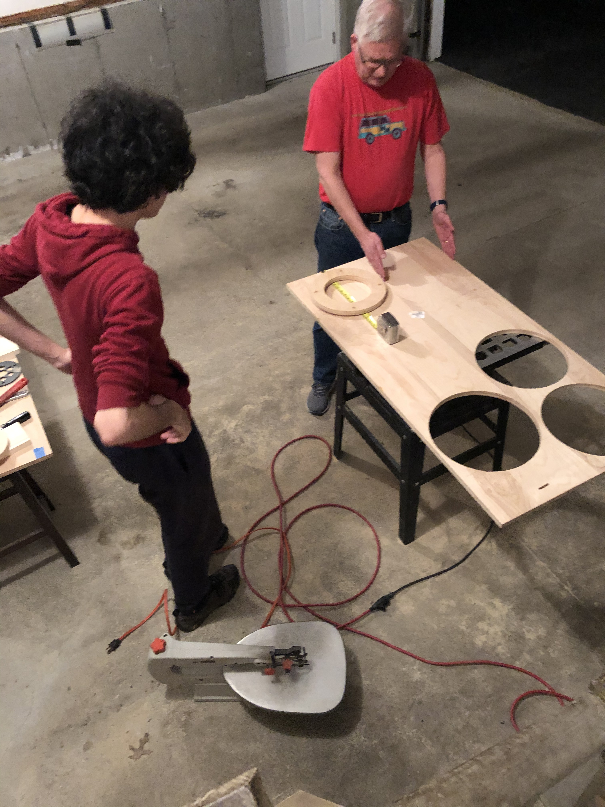

Making a Magnet: Postmortem

The dream of creating a powerful permanent magnet for our motor died unceremoniously with the implications of the growing global pandemic. However, we learned many lessons through trial-and-error which we hope to pass onto any future IQP team, or anyone attempting a similar project. We believe we were on the right track to make a working magnet in D term, but there were pitfalls that prevented us from doing so earlier.
Look at Historical Material
If you are looking to fashion your very own permanent magnet from a piece of iron, after a cursory Google, you'll find that magnet-making is not really a hobby. There are no strict how-to guides, and most information applies to how to create magnets with modern high-tech equipment. However, we found that there was a niche of experimenters in the 16th century (and even before!) that were devising a variety of methods to create artificial magnets. Some of these methods are more practical than others, but these historical sources were of greater use to us than any YouTube video out there, since, again, people do not seem to be home-brewing their own artificial magnets in the 21st century.
Take Modern "Shortcuts"
In our first term of attempts, we were focused on using methods that were close to what Thomas Davenport would have had in the early 19th century. In hindsight, we should have started with a "proof of concept" method of magnetizing iron with whatever means necessary, disregarding the fact that Thomas Davenport did not have an acetylene torch. Even if you forgo the charcoal fire for a modern method of heating the metal, do not underestimate the task! There are still many variables to consider. If you are able to create a magnet in this way, then move forward by replacing parts of the methodology with more period-accurate technology.
Find Help
Doug Leonardi was a useful resource. He lent us materials that we were able to use for creating a magnet and gave us his opinion about our methodology. We should have made more of these contacts earlier in the process. WPI is a perfect place to start looking, so we encourage any future IQP team to reach out as much as possible, especially if the size of the team is only two.
Have a Fire Extinguisher Ready
Perhaps this tip doesn't belong in this post-mortem since we were mostly diligent about this, but we want to reiterate this for any future IQP team. If you're making a magnet, you are probably working with extreme heat that will melt or ignite most things that come close. Another note about the extreme heat—remember that the Curie temperature works two ways. It can add magnetization to metal, or remove it entirely. If you are using permanent magnets to create a third permanent magnet, you will need to find some way to bring the target metal to the Curie temperature while insulating the existing permanent magnets so they do not reach the Curie temperature, lose all magnetic properties and become useless. Our plan was to design and machine an aluminum rig for this before our plans were cut short.
Make a Magnet or a Motor (Not Both)
Making a magnet, for us, proved to be difficult. We destroyed a non-negligible amount of material we purchased and assembled for the purpose of attempting to create a magnet, including other magnets. Perhaps a future IQP could focus solely on the history of creating artificial permanent magnets, instead of creating a magnet as a component of a greater assemblage, as we were doing. This would take away the pressure of creating a magnet of the correct strength and shape for the motor, and instead let the IQP team focus on achieving the best results that are possible within the time frame. Hopefully reading our blog will give this future IQP team a head start!